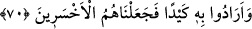

70. Böylece ona bir tuzak kurmak istediler; fakat biz onları, daha çok hüsrana
uğrayanlar durumuna soktuk.
“Ona” zarar vermek “büyük bir tuzak kurmak istediler; fakat biz onları, daha çok
hüsrana uğrayanlar durumuna soktuk.” Yâni onları, başlarına gelebilecek
musîbetlerin en dehşetlisi ile yenilgiye uğrattık. Hakk’ın nurunu söndürmek için
gösterdikleri gayret, Hz. İbrahim’in hak, onların da bâtıl üzere bulunduklarının kesin ve
açık delili haline geldi. Yine onun mânevî derecesinin yükselmesine, onların ise çetin
bir azâba müstehak olmalarına gerekçe oldu.
Mesnevî’de der ki:
Kim Hakk’ın mumuna püf derse
Mum söner mi hiç? Kendi ağzı yanar
Senin gibi yarasalar çokça rüya görürler
Sanırlar ki bu dünya güneşten yetim kalır
Aya ve göğe doğru tüküren
O dudak, boğaz ve ağız kesile kalsın
Hiç kuşkusuz o tükürük kendi yüzüne geri döner
O tükürük göğe doğru yol bulmaz
Ebû Leheb’in rûhuna “Tebbet” lâneti yağdığı gibi
Onun üstüne de kıyâmete dek Rab’den tükürük yağar
Denilir ki: “Fakat biz onları, daha çok hüsrana uğrayanlar durumuna soktuk..”
Yâni Allah’ın en zayıf bir mahlûk olan sivrisineği musallat kılarak ve sivrisineğin
onları öldürmesiyle onları helâk olanlardan kıldık. Çok geçmeden Nemrud, sivrisineğin,
adamlarının etlerini yediğini ve kanlarını içtiğini gördü. Sonra sivrisineklerden biri
Nemrud’un genzine girdi. Beynine ulaşana kadar onu yemeye devam etti. Nemrud’a göre
insanların en değerlisi, başına demir tokmakla vurandı. O, dört yüz sene bu hâl üzere
kaldı. Bu konu daha önce Nahl sûresi 26. âyette geçmişti.